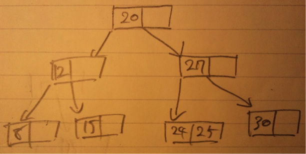

東京大学大学院 学際情報学府学際情報学専攻 総合分析情報学コース
2009年度 冬季募集 専門科目
第2問
(1)
int tmp;
While(1){
while(a[i]<pivot && i<j)i++;
while(a[j]>pivot && i<j)j--;
if(i>=j) break;
tmp = a[i];
a[i] = a[j];
a[j] = tmp;
}
(2)
Qsort([3,5,4,2,1],0,4) pivot:3
Qsort([1,2,4,5,3],0,1) pivot:1
Qsort([1,2,4,5,3],2,4) pivot:4
Qsort([1,2,3,5,4],3,4) pivot:5
→結果 [1,2,3,4,5]
(3)
15を追加

27を削除

(4)
最小：１５
最大：３０
第3問
(1)
１つの命令を、 F：フェッチ D：デコード E：実行 M：メモリアクセス W：ライトバック の５ステージから構成されるとすると、ハザードが発生しない限りはある命令の処理が終わるまで他の命令は待つ必要は無く、ステージ毎に別々の１命令を処理していた方が効率が良いことは明らかである。図で表すとすれば、
| 命令A | F | D | E | M | W | ||
| 命令B | F | D | E | M | W | ||
| 命令C | F | D | E | M | W |
(2)
(a)
命令実行時に必要なデータの結果待ちのためにストールせざるを得ない状態。フォワーディング機構により起こりにくくさせることが可能。
(b)
分岐命令の結果次第で後続の命令が変わるために起こるハザード。遅延分岐や、分岐予測により緩和可能。
(c)
同一のハードウェア資源を同時期に複数の命令が必要とする場合に発生。例えば２つの命令が１つのメモリに同時にアクセスすることは不可能であり、片方の命令はストールさせる必要がある。資源の多重化により解決出来る。
(3)
(a)
通常のパイプラインは５ステージ程度だが、さらに細分化した数十ステージのパイプライン。動作周波数が向上し、ステージ毎の処理時間が均衡化されるためにパイプライン処理が効率化されるが、分岐予測が失敗した場合のペナルティも増加するため、単純に実行速度が向上するとは限らない。
(b)
パイプラインを複数使用し、複数の命令を同時実行することにより高速化を図る。命令レベルの依存性や、依存性をチェックする機構によるオーバーヘッドのために２本のパイプラインで２倍の処理速度を出すことは実際には困難。
(c)
依存関係に無い複数の命令を一つの命令として同時実行する。１命令が従来の命令に比べ非常に長くなるためにこの名がつけられた。
第4問
(1)
・コンパイラ
設計がインタプリタに比べると困難。ソースコードを事前に全て機械語に変換してから実行する。コンパイルの時間を要するが、実行時には無駄な処理が無く高速。
・インタプリタ
設計がコンパイラに比べれば容易。ソースコードを逐次解釈しながら実行する方法。事前にコンパイルする必要は無いが、実行時に機械語変換のオーバーヘッドが掛かるため、実行速度がコンパイラに比べて劣る。
(2)
Java仮想マシンが有名。Java言語で開発されたソフトは、配布時にはプラットフォームから独立した独自のJavaバイトコード形式になっており、これをJava仮想マシンが実行するプラットフォームのネイティブコードに変換することにより実行する。インタプリタ形式のものをJVM。コンパイラ形式のものをJITコンパイラと呼ぶ。
(3)
まずソースコードからコンパイラによりオブジェクトコードを生成したのち、リンカによってオブジェクトコードと必要なライブラリなどを付け加えて、機械語コードである実行ファイルが生成される。
字句解析
構文解析
意味解析
最適化
コード生成
第5問
(1)
・ページング方式
物理メモリ空間、論理メモリ空間をページサイズ単位で分割し、同じ長さで分割したメモリのブロックにページテーブルによって対応付けする方式である。主記憶と補助記憶装置、場合によってはキャッシュメモリもページ単位でデータを送受信することで効率的なデータ管理を実現する。外部フラグメンテーションが発生しない。
・セグメント方式
ページング方式が固定長で分割していたのに対し、セグメント方式はデータやプログラムを可変な大きさのまとまりで管理する方式である。プログラムに割り当てるメモリが連続している必要があり、外部フラグメンテーションの問題がある。
(2)
・ファーストフィットアルゴリズム
(a)20KBの空き領域
(b)10KBの空き領域
(c)18KBの空き領域
・ベストフィットアルゴリズム
(a)12KBの空き領域
(b)10KBの領域
(c)9KBの領域
・ワーストフィットアルゴリズム
(a)20KBの領域
(b)18KBの領域
(c)15KBの領域
(3)
ウェアレベリング機能のあるOSを利用することで、SSDの弱点を緩和し、寿命を延ばすことが可能。書き込み限度回数はSSD全体に対しての回数では無く、記憶素子一つ一つに対しての回数である。ウェアレベリングにより、書き換えがひとつの素子に集中させず、均一に分散させれば、SSD全体としての書き換え限度回数は飛躍的に向上する。
第6問
(1)
通信ネットワーク上の２点間を結ぶ閉じられた仮想的な直結回線を確立すること。
本来通信を行いたいプロトコルで記述されたパケットを、別のプロトコルのパケットで包んで送り届けることによって通信を行う。これをカプセル化と呼ぶ。パケットのカプセル化と、その解除はトンネルの両端の機器が自動的に行うため、トンネルで結ばれた両端の機器同士は途中の通信方式や経路を気にする必要が無くなる。
暗号化されることが多い。
(2)
・セキュリティ
いくらパケットを暗号化していても、公共回線にデータを流すのであればデータが盗み見られない保証は無い。
・通信速度の保証
公共回線なので、安定した通信帯域を要求する場合には適さない。
(3)
トンネリング機能に、さらに暗号化機能を備えているIPsecは広く利用されている。
IPのパケットを暗号化するため、TCPやUDPなど上位層のプロトコルを気にする必要が無い。IPv4ではオプションとして利用可能。共通鍵暗号方式が使われ、暗号化アルゴリズムは特定のものに限定されておらず、様々な暗号アルゴリズムを利用可能。
(4)
あるネットワークを基盤として、その上に築かれた仮想的なネットワークのことをオーバーレイネットワークと呼ぶ。上位層ネットワーク利用者は、下層の形態や制御を意識することなく利用可能。
トンネリングではインターネットを介した通信でも、あたかも同一LAN内でのやりとりに仮想的に見せかけることが可能であり、一種のオーバーレイネットワークであると言える。
(5)
サイズFをSに分割
F/S個のパケットに分けて送信する。
F + (F/S * h) を送信する必要がある。
(F + (F/S * h))/R
Sが大きければ大きいほど早くなる。
つまり、セグメントサイズは大きければ大きいほどよい。これは送信先のネットワークのMTUに合わせて設定すればよい。
(6)
送信先ネットワークのMTUに合わせるだけでよい。
第7問
(1)
※Xが素数のときにYに１を出力ぽい？
4bitで表せる素数なので、 2,3,5,7,11,13 のときにYが１になる。
| X3 | X2 | X1 | X0 | Y |
| 0 | 0 | 0 | 0 | 0 |
| 0 | 0 | 0 | 1 | 0 |
| 0 | 0 | 1 | 0 | 1 |
| 0 | 0 | 1 | 1 | 1 |
| 0 | 1 | 0 | 0 | 0 |
| 0 | 1 | 0 | 1 | 1 |
| 0 | 1 | 1 | 0 | 0 |
| 0 | 1 | 1 | 1 | 1 |
| 1 | 0 | 0 | 0 | 0 |
| 1 | 0 | 0 | 1 | 0 |
| 1 | 0 | 1 | 0 | 0 |
| 1 | 0 | 1 | 1 | 1 |
| 1 | 1 | 0 | 0 | 0 |
| 1 | 1 | 0 | 1 | 1 |
| 1 | 1 | 1 | 0 | 0 |
| 1 | 1 | 1 | 1 | 0 |
真理値表より、
Y = (¬(X3)*¬(X2)*X1*¬(X0))+ (¬(X3)*¬(X2)*X1*X0)+ (¬(X3) *X2*¬(X1)*X0)+ (¬(X3)*X2*X1*X0)+ (X3*¬(X2)*X1*X0)+ (X3*X2*¬(X1) *X0)
(4)
MOSトランジスタのサイズを、縦、横、高さ全てを1/2し、電圧を1/2にして使えば、トランジスタの動作が保証されると共に、スイッチングの高速化に加えて低消費電力になるという法則。→小さくすれば小さくするほど高速＆低消費電力になる。
しかしながらナノスケールまで微細化されると物理的限界が見え始め、リーク電流や配線遅延の問題も無視できないほどになり、これ以上の小型化は困難であると言われている。